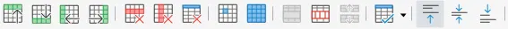
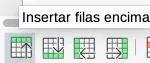
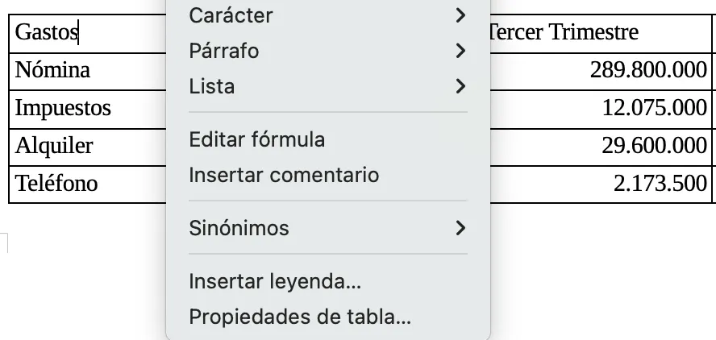
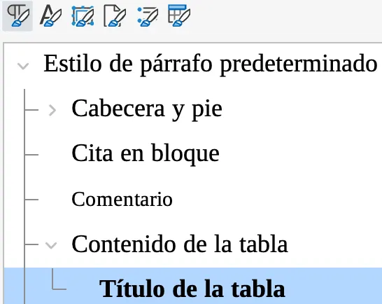
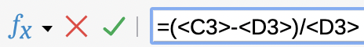
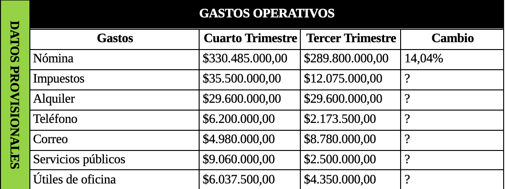

A11: Tablas en LibreOffice Writer¶
En esta actividad, se aprende a crear tablas básicas, convertir textos a tablas, modificar propiedades y realizar cálculos en tablas dentro de un documento de LibreOffice Writer.
Desarrolle las siguientes tareas:
TAREA 01: Creación de tabla básica 1¶
En esta tarea aprenderá a crear una tabla básica en LibreOffice Writer usando la herramienta de creación de tablas localizada en la barra de herramientas estándar. También aprenderá a insertar y eliminar filas.
EJECUTE el software LibreOffice Writer.
En la cabecera del documento, AGREGUE un párrafo con la siguiente información:
Tabla básica - Nombre Apellido - Curso - Jornada - Fecha - Hora
GUARDE el documento en su carpeta de evidencias del periodo actual con el nombre: A11T01-creacion_tabla_básica.odt
Lea el siguiente texto:
Identificación de tablas, columnas, filas y celdas
Una tabla se compone de:
Columnas: Son las líneas verticales en la tabla. (Por ejemplo la columna A, B y C)
Filas: Son las líneas horizontales en la tabla. (Por ejemplo la fila 01, 02 y 03)
Celdas: Es la intersección entre una columna y una fila. Cada celda tiene un dato específico. (Por ejemplo CELDA 01, CELDA 02, CELDA 03, etc.)
Los valores de una tabla se pueden identificar así:
A1 = CELDA 01
B1 = CELDA 02
C1 = CELDA 03
.
A
B
C
1
CELDA 01
CELDA 02
CELDA 03
2
CELDA 04
CELDA 05
CELDA 06
3
CELDA 07
CELDA 08
CELDA 09
Acorde al texto anterior, responda las siguientes preguntas:
¿De qué se compone una tabla?
¿Cuál sería el valor de A3, B2 y C1?
PULSE el botón Insertar tabla en la barra de herramientas estándar. Luego PULSE Más opciones…

En la ventana Insertar Tabla, configurar lo siguiente:
En la sección General configurar:
Columnas: 3
Filas: 7
En la sección Opciones configurar:
Marcar la opción de Título
Marcar la opción de Repetir filas de título en páginas nuevas
En la sección de Estilos configurar:
Seleccionar Académico.
PULSE el botón Insertar.
LLENE la tabla con la siguiente información:
EMPRESA
VENTAS
ACTIVIDAD
EXXON
48.630
Petroleo
GENERAL MOTORS
47.181
Automoción
FORD
228.865
Automoción
TEXACO
4.456
Petroleo
MOBIL OIL
334.456
Petroleo
IBM
34.284
Electrónica
SELECCIONE la tabla e identifique la barra de herramientas de tabla localizada en la parte inferior de la interfaz de LibreOffice Writer.
UBIQUE el cursor en cada uno de los iconos de la barra de herramientas de tabla para que aparezca su nombre y en su cuaderno escriba una lista con dichos nombres.
Para crear una nueva fila en la tabla, UBIQUE el cursor en la celda de TEXACO y PULSE el botón Insertar Filas debajo.
Para cortar o copiar datos de filas, SELECCIONE toda la fila de la celda GENERAL MOTORS y corte dichos datos con (CTRL + X).
EMPRESA
VENTAS
ACTIVIDAD
EXXON
48.630
Petroleo
GENERAL MOTORS
47.181
Automoción
FORD
228.865
Automoción
Para pegar datos en filas, UBIQUE el cursor en la fila vacía inferior y pegue los datos recién cortados (CTRL + V).
Para eliminar filas, SELECCIONE la tercera fila y PULSE el botón Eliminar filas seleccionadas.
Corregir los errores ortográficos que tenga la tabla.
Ahora la tabla debe tener la siguiente distribución:
EMPRESA
VENTAS
ACTIVIDAD
EXXON
48.630
Petroleo
FORD
228.865
Automoción
TEXACO
4.456
Petroleo
GENERAL MOTORS
47.181
Automoción
MOBIL OIL
334.456
Petroleo
IBM
34.284
Electrónica
GUARDE los cambios y cierre el software LibreOffice Writer.
{kind=link}
{kind=link}
TAREA 02: Convertir texto a tablas 1¶
En esta tarea aprenderá a convertir texto a tabla.
DESCARGUE el siguiente archivo y guárdelo en la carpeta de evidencias:
A11T02-consultores.odt Descargar
ABRA el archivo: A11T02-consultores.odt y en la cabecera del documento, AGREGUE un párrafo con la siguiente información:
Conversión texto a tablas - Nombre Apellido - Curso - Jornada - Fecha - Hora
En el documento identifique la sección de Nuevo Personal. Debajo del título encontrará un texto compuesto por nombres de personas, oficinas y extensiones telefónicas.

En el menú superior, PULSE el menú de: Tabla > Convertir > Texto en tabla…
En la ventana Convertir texto en tabla configurar las siguientes opciones:
En la sección de Separar texto en, configurar:
ACTIVE la opción: Tabuladores.
MARQUE la opción: Misma anchura para todas las columnas…
En la sección de Opciones, PULSAR el botón Formato automático…
Se abrirá la ventana: Formato automático.
En la sección de Formato, SELECCIONAR la opción de: Estilo de tabla predeterminado.
PULSE el botón Aceptar para cerrar la ventana Formato automático.
PULSE el botón Aceptar.
SELECCIONE la tabla de Nuevo Personal y en la barra de herramientas de tabla, PULSE el botón: Optimizar tamaño > Anchura de columna al mínimo. La tabla deberá tener la siguiente apariencia:

GUARDE los cambios y cierre el software LibreOffice Writer.
TAREA 03: Modificando propiedades de tabla 1¶
En esta tarea aprenderá a modificar propiedades de una tabla: modificar estilos de párrafo de tabla, adaptar la altura de una celda, alinear una fila, ordenar datos, fusionar celdas y aplicar estilos de tabla.
DESCARGUE el siguiente archivo y guárdelo en la carpeta de evidencias:
A11T03-tablas03.odt Descargar
Abra el archivo: A11T03-tablas03.odt y en la cabecera del documento, AGREGUE un párrafo con la siguiente información:
Propiedades de tablas - Nombre Apellido - Curso - Jornada - Fecha - Hora
IDENTIFIQUE la tabla en el documento. (OBSERVE que la tabla esta dividida en dos hojas lo cual puede dificultar su entendimiento).
SITUE el cursor en la tabla y PULSE el botón derecho del mouse para abrir el menú contextual de dicha tabla. Luego SELECCIONE la opción Propiedades de tabla…
En la ventana Propiedades de tabla configurar las siguientes opciones:
En la pestaña Flujo del texto, configurar:
En la sección Flujo del texto, configurar:
DESMARCAR la opción: Permitir división de tabla en páginas y columnas
PULSE el botón Aceptar.
SELECCIONE la primera fila de la tabla y en la jerarquía de estilos de Estilos de párrafo, de la barra lateral derecha, aplique el estilo: Título de la tabla
SELECCIONE las demás filas de la tabla y en la jerarquía de estilos de Estilos de párrafo, aplique el estilo: Contenido de la tabla.
SELECCIONE la primera fila de la tabla y en el menú contextual de la tabla SELECCIONE la opción: Tamaño > Altura de fila…
En la ventana Altura de la fila, configurar las siguientes opciones:
En la sección Altura, configurar:
Ajustar la altura a 1,00cm
PULSE el botón Aceptar.
SELECCIONE toda la tabla y haga una copia en la parte inferior para tener dos tablas.
Lea el siguiente texto:
¿Cómo ordenar valores de una tabla en LibreOffice Writer?
En la sección de Criterios de ordenamiento, usted puede configurar hasta 3 parámetros de ordenamiento.
Cada parámetro de ordenamiento se diferencia con una clave.
Cada clave representa una columna de la tabla.
Usted puede marcar hasta 3 claves para que el programa tenga en cuenta uno, dos o tres parámetros de ordenamiento. (Por ejemplo que tenga en cuenta los valores monetarios y al mismo tiempo el orden alfabético de un inventario de productos).
Los tipos de clave pueden ser Numérico y Alfanumérico. Esto depende de los valores que tenga la tabla. Por último usted establece el orden en que estos valores aparecerán ya sea ascendente o descendente.

Acorde al texto anterior, en su cuaderno responda las siguientes preguntas:
Al momento de ordenar los valores en una tabla, ¿Cuántos parámetros de ordenamiento se pueden tener en cuenta?
Escriba un ejemplo en el que al momento de ordenar los valores de una tabla se tenga en cuenta más de un parámetro de ordenamiento.
¿Qué tipos de claves se pueden seleccionar para ordenar la tabla?
SELECCIONE todas las filas menos la primera (de la segunda tabla). Luego en la barra de herramientas de tabla, PULSAR el botón Ordenar.
En la ventana Ordenar, configurar las siguientes opciones:
En la sección Criterios de ordenamiento, configurar:
Marcar Clave 1, Seleccionar la columna 1, el tipo de clave es alfanumérico porque en este caso se ordenan los nombres de los gastos en orden alfabético inverso (de la Z a a la A). El la opción de Orden marcar Descendente.
Marcar Clave 2, Seleccionar la columna 4, el tipo de clave es numérico porque en este caso se ordenan los valores numéricos de Porcentajes de Menor a Mayor valor. En la opción de Orden marcar Ascendente.
PULSE el botón Aceptar.
COMPARE los valores ordenados de la columna de Gastos y los valores “ordenados” de la columna de Cambio. Responda la siguiente pregunta en su cuaderno:
¿El orden obtenido tuvo en cuenta las dos claves? o por el contrario solo tuvo en cuenta la primera clave. Explique su respuesta.
Vuelva a SELECCIONAR todas la filas menos la primera (de la segunda tabla) y vuelva a ordenar los elementos. Esta vez desmarque la Clave 1 y PULSE Aceptar. Responda la siguiente pregunta en su cuaderno:
¿Que cambió en la tabla?
Lea el siguiente texto:
¿Por qué es importante dar formato a las tablas?
Las tablas son importantes porque permiten organizar la información de tal forma que sea analizada para posterior toma decisiones.
Los campos en una tabla son celdas que describen el tipo de información que tendrán.
En algunas ocasiones estas celdas se fusionan para que la tabla tenga un mejor aspecto y comprensión de la información.

Tabla sin celdas fusionadas¶

Tabla con celdas fusionadas¶
Acorde al texto anterior en su cuaderno responda:
¿Por que los campos son importantes en las tablas?
Observe las colores de las celdas y responda: ¿Cuáles se fusionaron?
SELECCIONE la segunda tabla y haga una copia en la parte inferior para tener tres tablas.
UBIQUE el cursor en la primera celda de la tercera tabla y en la barra de herramientas de tabla, PULSE el botón: Insertar columnas antes.
UBIQUE el cursor en la primera celda de la tercera tabla y en la barra de herramientas de tabla, PULSE el botón: Insertar filas encima.
SELECCIONE todas la celdas de la primera columna y en la barra de herramientas de tabla, PULSE el botón: Combinar celdas.
En la celda de la primera columna fusionada, ESCRIBA el texto: DATOS PROVISIONALES.
UBIQUE el cursor en la primera columna fusionada y en la barra de herramientas de tabla, PULSE el botón: Centrar verticalmente.
UBIQUE el cursor en la primera columna fusionada y en la barra de herramientas de tabla, PULSE el botón: Color de fondo de celdas de tabla. Seleccionar el color: Verde Lima.

UBIQUE el cursor en la primera columna fusionada y en la barra de herramientas formato, PULSE el botón: Alinear al centro.
UBIQUE el cursor en la primera columna fusionada y en la barra de herramientas de tabla, PULSE el botón: Propiedades de tabla.

En la ventana de Propiedades de tabla, configurar las siguientes opciones:
En la pestaña: Flujo de texto configurar:
En la sección Flujo del texto, configurar:
Orientación del texto: Vertical (de arriba hacia abajo)
PULSE el botón Aceptar.
En el menú contextual de la celda (DATOS PROVISIONALES), SELECCIONAR Tamaño > Anchura de columna.
En la ventana Anchura de la columna, configurar:
En la sección Anchura, configurar:
Columna: 1
Anchura: 1cm
PULSE el botón Aceptar.
SELECCIONE las cuatro celdas de la primera fila y en la barra de herramientas de tabla, PULSE el botón: Combinar celdas.
En la celda de la primera fila fusionada, ESCRIBA el texto: GASTOS OPERATIVOS.
POSICIONE el cursor en la primera fila fusionada y en la barra de herramientas de tabla, PULSE el botón: Centrar verticalmente.
POSICIONE el cursor en la primera columna fusionada y en la barra de herramientas de tabla, PULSE el botón: Color de fondo de celdas de tabla. Seleccionar el color: Negro.
POSICIONE el cursor en la primera fila fusionada y en la barra de herramientas formato, PULSE el botón: Alinear al centro.
SELECCIONE toda la tercera tabla y en la jerarquía de estilos de tabla, APLIQUE el estilo: Finanzas.
La tercera tabla debería tener la siguiente apariencia:

GUARDE los cambios y cierre el software LibreOffice Writer.
{kind=link}
{kind=link}
TAREA 04: Cálculos en tablas 1¶
En esta tarea aprenderá a realizar cálculos en tablas.
DESCARGUE el siguiente archivo y guárdelo en la carpeta de evidencias:
A11T04-tablas04.odt Descargar
Abra el archivo A11T04-tablas04.odt y en la cabecera del documento, AGREGUE un párrafo con la siguiente información:
Cálculos en tablas - Nombre Apellido - Curso - Jornada - Fecha - Hora
IDENTIFIQUE la tabla GASTOS OPERATIVOS y SELECCIONE todas las celdas con valores numéricos en las columnas de Cuarto y Tercer Trimestre.
En la barra de herramientas de tabla, PULSE el botón: Formato numérico moneda. En su cuaderno describa que acabo de pasar con los valores numéricos de las columnas seleccionadas anteriormente.
SELECCIONE todas las celdas con valores numéricos en la columna Cambio.
En la barra de herramientas de tablas, PULSE el botón: Formato numérico porcentaje.
Lea el siguiente texto:
Variación de cambio (%)
La variación de cambio es un porcentaje positivo o negativo que mide que tanto varió un valor anterior con un valor actual. La fórmula es:
\[ =(ValorActual-ValorAnterior)/ValorAnterior \]Por ejemplo:
En anterior mes se tuvieron ganancias de $1,000,000
En presente mes se tuvieron ganancias de $2,000,000
Aplicando la formula se tiene:
\[ =(\$2,000,000 -\$1,000,000)/\$1,000,000\]\[ =100\% \]Por tanto la variación fue de un 100% a favor de tener más ganancias.
Con respecto al texto anterior, en su cuaderno responda:
¿Qué es la variación de cambio y para que sirve?
Identifique una variación de cambio para unas ganancias actuales de $1,000,000 y unas ganancias del mes anterior de $3,000,000.
En la tabla de Gastos Operativos, IDENTIFIQUE la primera celda vacía debajo de la palabra Cambio y en esta celda escriba la siguiente formula:
\[ =(<C3>-<D3>)/<D3> \]La formula anterior permitió obtener la variación de cambio de los gastos de Nómina de Cuarto Trimestre frente al Tercer Trimestre. Esto dio un 14,04%.
<C3>es la celda que pertenece al valor $330.485.000,00<D3>es la celda que pertenece al valor $289.800.000,00
Por medio de formulas, OBTENGA todas las variaciones de cambio para los gastos de Impuestos, Alquiler, Teléfono, Correo, Servicios públicos y Útiles de oficina.
¿Cómo identificar las celdas?
UBIQUE el cursor en alguna celda de cualquier tabla.
OBSERVE en la barra inferior de la interfaz de LibreOffice Writer la letra y el número de celda al cual pertenece.

La tabla tendrá la siguiente apariencia:
GUARDE los cambios y cierre el software LibreOffice Writer.
{kind=link}
{kind=link}
TAREA 05: EVALUACIÓN¶
Presentación de cuaderno y carpeta de evidencias
En esta tarea, el estudiante es evaluado con los temas vistos en la presente actividad.
El estudiante presenta el cuaderno con el desarrollo de todas las tareas.
El estudiante presenta su carpeta de evidencias.
El docente realiza unas preguntas para comprobar que el estudiante haya entendido los temas.